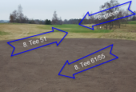

<div class="pages">
  <div data-page="574-8-tee-61-55-er-nu-plant" class="page navbar-fixed toolbar-fixed" >
    <div class="navbar">
      <div class="navbar-inner">
        <div class="left">
          <a href="#" class="link back icon-only"><i class="icon icon-back"></i></a>
          <!-- <a href="#" class="back link icon-only"><i class="icon icon-back"></i></a> -->
        </div>
        <div class="center">Information fra bestyrelsen og økonomital opdateret</div>
        <!-- <div class="right"></div> -->
        <div class="right">
        </div>
      </div>
    </div>
    <div class="page-content" style="padding-top:45px;">
       <div class="content-block">
          <p><b>8. tee 61/55 er nu plant</b><br /><br />
            Detaljer<br />
            Oprettet: 20. december 2016
          </p>
          <center></center>
          <p>8. tee er 61/55 er nu renoveret og blevet plant. Teestedet har længe været skævt og nu har greenkeeperne rettet det op.
          <br /><br />
          På samme måde som 17 og 6. tee, så vil alle de nye teesteder blive åbnet i takt med at de er klar. Og klar, det betyder at græsset er i stand til at overleve brugen, og det bliver først når sommeren er i gang. Vi kan, måske heldigvis, ikke styre vejrguderne, og de har altså stor betydning for hvor hurtigt det går. Så husk gerne at have dem med i nytårsønskerne.
          <br /><br />
          Vejret har væfet perfekt til disse arbejder her i efteråret. Det har været tørt så maskinerne har kunnet køre på banen og frosten har holdt sig væk, så det har været muligt at grave i jorden.
          </p>
        </div>
    </div>
    </div>
    </div>
  </div>
</div>
